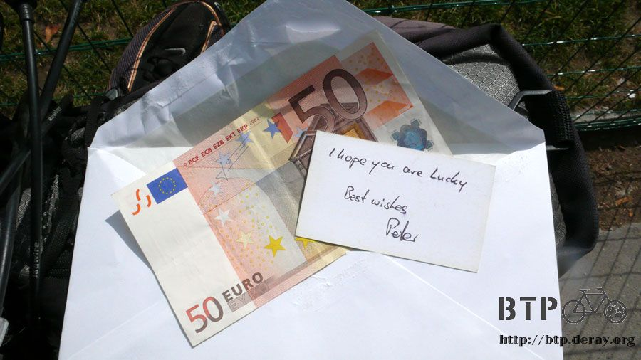

這裡沒有英雄
冷颼颼的半夜四點，在沒有換衣服的情況下用睡袋直接包裹著，離開睡袋之後也沒有多的衣服可以添加保暖。
在漆黑的夜裡吹著刺骨寒風，小多的把手全都是凝結的水氣，握起來的感覺好冰冷。
水壺裡的水很珍貴，此刻依然倒出了一些沾溼毛巾，用冰冷的水將臉胡亂的抹過，這樣又代表洗過了一次澡。
繁星點點的夜空下，我站在硬實的地上，感覺地面在晃動，身體的重心一直往右後方傾倒，就像喝醉一樣，站都站不太穩。
不過是熬夜寫個遊記而已，後遺症有這麼嚴重嗎？
等等我還要騎車上路呢，這樣沒問題吧。
站不穩不代表不能騎車，騎車只要腳能夠踩下踏板就行了。
黑漆漆的夜裡，確實是伸手不見五指，月亮不知道躲到什麼地方去，想用星光照明的話，我得去找一副夜視鏡才行。
從後方經過的車輛可以給予短暫的時間看清楚路況，從前方駛來的車輛，刺眼的頭燈則讓眼睛有暫時失明的感覺。
除了汽車的大燈照明之外，所仰賴的還是小多的車燈，在亮度有點勉強的情況下，連手電筒也拿出來跟著一起照路。
睡了好幾次公車站，整個晚上都在聽汽車呼嘯而過的聲音，睡到有心得之後歸納出一個結論，凌晨三點～六點這段時間是車輛最少的時候。
四點出發的我，只要小心一點，不要自己騎到砂石地上或是坑洞中摔個狗吃屎，安全性大致上是無虞的。
我很相信不會被車輛給撞到，在黑夜中駕駛人能夠辨識我的只有車尾的紅色小閃燈，但效果出奇的好。
遠遠的就聽到後方有車輛開過來的聲音，可以準確的猜出是大卡車還是小轎車，接下來就是遠燈照明、減速、間隔很遠的繞過我、加速開走。
若是對向正好也有車輛開過來，導致後方車輛無法變換車道繞過我的話，駕駛人就靜靜的跟在後面，直到適合的時機才開過去。
每次一有車輛要經過我，嘴裡就默念著『撞不到～沒事～撞不到～放心～撞不到～別怕』
最擔心的還是自己騎到跌倒，即使後方的車輛會閃避我，我還是儘可能的靠著路邊騎車，所以很容易就騎在佈滿砂石的路面。
漆黑的夜裡視線很模糊，當東西出現在車燈照明的範圍內，我只有短短的一秒鐘可以分辨；那是什麼？要不要閃？
感覺嘴巴很乾渴，喝水也沒有效，並不是真的口渴，而是因為摸黑騎車太緊張，壓力太大所導致的口乾舌燥。
晚上的時候看到路面上那些被壓扁的松鼠、刺蝟，還有路面上反著紅光的血漬跟碎肉，感覺比白天要恐怖十倍。
不時按著手錶的背光照明，想知道現在幾點，時間越是查看彷彿就過得越慢，還以為撐到六點天就會亮，但是並沒有。
一直等到六點半左右，遙遠的地平線才漸漸有了光暈，終於撐到天亮了。

每天要是能看到日出，我都會跟自己說，太陽升起來的那一邊，就是家的方向，一點也不遠，就在地平線的那一端而已。
看見日落的時候，不論身處旅程的那一段，也跟自己說，太陽落下的方向，就是終點，不過是觸手可及的距離，快到了。
黑漆漆的夜晚一點一點地有了亮度，自己正處在黑夜跟白天的交界線上，能在遼闊的大地上感覺日夜的變化是很奇妙的感動。
太陽還沒冒出來之前，天空中有著美麗的雲彩，像是絲帶般盤踞在空中，雲彩被陽光染成繽紛的色彩。
即使在趕路的我，依然停下了腳步，靠著小多駐足欣賞這美麗的景色，一整個晚上沒睡，換到一個美麗的日出。
夜晚騎車當然不可能還戴著太陽眼鏡，這樣不如閉著眼睛騎比較徹底一點。
於是乎我戴上一般的眼鏡，將太陽眼鏡掛在最前面的包包上，之前都這麼掛也沒看它掉過。
等太陽爬出山頭，已經是早上七點之後的事，就是今天了，在太陽爬到頭頂之前，一定要騎到巴黎。

準備換上太陽眼鏡騎車，戴一般的眼鏡看起來會變得呆呆的，這時才發現太陽眼鏡已經不知道掉到什麼地方去了！？
我的老天爺，同樣一款的太陽眼鏡，已經被我弄丟兩付了，不知道是那一段黑漆漆的路面給震掉了，要回頭找是不可能的事情。
心痛加不捨也挽不回再度遺失的眼鏡，只好戴著一般的眼鏡騎車。
太陽冒出頭的時候，正好將可以騎的N4路段全部都騎完，接下來同一條路就變成汽車專用道，同時這也表示巴黎快到了。

轉進D231一路跟著巴黎的牌子走，A4是進入巴黎最快的道路，但高速公路自行車不能上，只好繞著大巴黎一路轉進小巴黎。
巴黎是一個很大的都會，比較知名的就是小巴黎，包圍著小巴黎的則是超級廣大的巴黎。

兩年前我從東南邊騎回來，光是要騎進市中心就讓我淚灑大巴黎，整個路線也太複雜了吧。
當時怎麼也騎不進小巴黎，最後硬上A4高速公路才騎到終點，這次不想再重蹈覆轍。
換從東邊騎進巴黎，一路上跟著巴黎的牌子走，看到它變成高速公路之後就算進入大巴黎的範圍了。
凌晨四點開始騎車，早上九點的時候竟然就抵達了大巴黎的範圍，速度之快令我感到訝異！
看到河就覺得是塞納河，看到房子就覺得是羅浮宮，搞不清楚身在何方，但是已經很有終點的感覺。
進入城市之後，地圖已經完全派不上用場，東鑽西繞的避開所有禁止自行車通行的路段。
同時這也是最快通往巴黎的路。
兩年前在相同的處境下迷路得很哀怨，看著摩托車都可以騎，為什麼自行車不行？
所以就硬上這條A4高速公路，舊地重遊，不相信自己走正常的路會騎不進巴黎。
看著高速公路延伸出去的方向，然後尋找差不多的替代道路，穿越一個又一個的區域，一點一點往中心區域移動。
又看到了河景，這並不是塞納河，就算沿著河畔一直走也到不了，真慶幸自己這次有帶指南針，沒有它還真不曉得該怎麼騎進巴黎。

感覺自己正在往對的方向走，但是沒有任何的證明，遇到拿著地圖的人就去問一下路。
巴黎的觀光客超多，路上隨處都可以看到拿著地圖在找路的遊客，這位大叔也是，手上這一份是大巴黎的地圖。

非常實用，但花錢去書報攤買的話一份要十歐元，現在沒這個預算可以花。
老伯手指著的地方，那塊粉紅色的範圍就是巴黎市中心，已經不遠了，只要再往西邊騎一段路，看到塞納河之後沿著走即可。
附帶一提，當我問大叔說巴黎鐵塔在哪，他跟我說從這邊騎車過去很遠呢，還有好幾公里的路。
我篤定的回答『不遠～一點都不遠。』
多虧老伯的地圖指示，很順利地進入了巴黎，這一路上只要進入比較大的城市，我都會在入口處的牌子照相做紀念。
這些照片首推這一張最有紀念意義，終點的巴黎，我穿著藍白拖騎了一百公里來到了。
臉上的太陽眼鏡遺失，只好露出真面目拍照，一整晚沒睡的結果，臉色有點黯淡，興奮跟疲憊感交集著，像拔河一樣。
一個要將我推倒，一個則是迫使我踩下一次又一次的踏板。
連續騎一百七十公里，坐在加油站休息六個小時，不把握時間睡覺還在寒風中寫遊記，然後繼續騎了一百公里的車。
站在地上感覺依然是晃晃悠悠的，騎車還勉強可以保持平衡，坐在小多上腳踩著地也很晃，我抓不到平衡的感覺。
好像東南西北都有地心引力在作用著，稍微一不小心整個人就會連同小多摔倒在地上，時速零公里摔車。
既然身體快撐不住了，那就趁著燃燒殆盡之前騎到終點吧。
這條河，它真的是塞納河，

進入巴黎了，找一條車水馬龍的橋過河，然後沿著塞納河向西走。
夢想著這最後的一段路已經想了好久，終於快要到了。
河畔邊依然都是小販，什麼東西都有在賣，我對巴黎一點都不熟，只有兩年前來過一次，因為騎自行車的緣故，很多地方都沒進去參觀。
市區內的單車道就好騎很多，相較於郊區來講，這邊簡直是自行車的天堂。
比照台灣，不要用交通繁忙做為藉口，世界上一流城市的首都，不論是巴黎、莫斯科、北京、華沙，都有規劃良好的自行車道。
這些國家能做到，為什麼台北不行，甚或是，為什麼台灣不行？
尊重自行車騎士的權益，不僅僅是嚴格取締違規、自行車強制烙碼、強制戴安全帽這些措施，這對於騎自行車的人來說只是限制而不是幫助。
這些都是世界首創的爛政策！
如果台灣哪一個城市的市長，尤其是台北，願意自己騎自行車到處查看一下，就會發現在市區騎自行車是很艱難的事情。
沒有適合的道路、沒有良善的規劃，擺明了就是不讓自行車出現在市區，要騎自行車可以，請去郊區踏青。
要是哪一天，在台北市騎車的時候也能有巴黎那樣的自在感、尊重感、安心感，我想台北市就有資格說自己是國際一流的城市。
巴黎正在推動公用自行車服務，法國其它的城市已經推行好一段時間了。

嶄新的自行車一字排開，這才是最健康又符合環保的市區交通工具。

我很欣賞歐洲的一些措施，比如說油價超貴這一點，最好可以再貴一點，減少大家開車上路的機會。
昂貴的油價中包含了很多的費用，像是空污稅等等，理想的作法是將這些費用拿來補貼大眾運輸工具的車資。
如此一來，遠行可以搭長途巴士，市區內可以搭電車、地鐵，當然，自己騎自行車那更是舒適又自在。
試想，如果今天台北市捷運跟莫斯科一樣實施單一票價，不論搭多遠，統一只要十五元，那能造福多少民眾願意搭捷運而不是開車。
別說不可能，地下鐵錯綜複雜、涵蓋面積比整個台北縣都還大的莫斯科都有辦法做到，台北為什麼不行？
在巴黎，若是比較擁擠的馬路，自行車道跟公車道是規劃在一起的，而大多數的路段，自行車都有專用的路可以騎乘。
這不單單是假日的時候去河濱單車道兜個風那麼簡單，在巴黎，是確確實實的能夠騎自行車到每一個想去的角落。
台北，在那麼多交通罰則之下，接下來台北的單車道規劃會跟香港還是跟巴黎看齊，我只能說，加油。
希望，這些高高在上的政治人物可以放下身段，親自騎自行車感受一下你所管理的城市，和生活在這座都市中的人所需要的環境。
你希望民眾在騎車的時候是收到罰單還是帶著微笑？
沿著河畔走，很快的，出現了一根尖尖的鐵塔，巴黎鐵塔首度目擊！

越往前走鐵塔就越接近，各位可以自行配樂，看現在適合什麼樣的氣氛。

終點到了，巴黎鐵塔。

GPS衛星照片是這樣子的，藍色是騎乘的路線。

這陣子巴黎在舉辦球賽，一大堆穿著裙子的男生在喝啤酒慶祝自己國家的比賽。
就算沒有辦任何活動，不論什麼時候到這裡，我想差不多都是這麼熱鬧的景象。
騎到巴黎鐵塔的時候，沒有歡迎的人潮、沒有急著發問的記者、沒有白色的衝刺線，但，這就是我想要的終點。
熙攘的遊客、繁雜的交談，沒有人注意到有一個髒兮兮的年輕人騎著掛滿行李跟輪胎的自行車，安靜的抵達了鐵塔的下方。
拖著疲憊的身軀，我騎到了，出發時間是2007年4月23日早上6點50分，便宜旅館的小馬幫我照了這張照片。
嶄新的小多、潔淨的衣服、未經風雨不知路途險惡的我，從這裡開始，展開一百四十四天的旅行。
每一天，我都很珍惜路人的加油聲以及無私的協助。
每一刻，我都很高興自己還有力氣可以繼續往下騎。
每一分，我都記得有那麼多人在期盼著我抵達巴黎。
每一秒，我都用力呼吸盡情揮灑生命證明自己活過。
經歷了一萬四千多公里的路，將近五個月的時間，小多變髒了、能壞的幾乎都壞過了，行李弄丟了一堆，
自己也曬黑了、身上留下數不清的傷痕，變胖還是變瘦則搞不清楚，有一點很明確，知道自己也變髒了，而且一天髒過一天。
拍拍身上的灰塵，變髒沒關係，我一點也不在乎，只要活著有一口氣，就賭這一口氣，想做什麼都有可能實現。
拿出包包裡的小國旗，出來透透風吧～
相機放在地上，拿出國旗走到小多旁邊，來來往往穿越的人潮全部都停下了腳步，一臉疑惑的看著我。
小多倚靠著欄杆，四周都是遊客喧鬧的聲音，腦袋已經耳鳴得嗡嗡作響，可以清楚聽到心跳的聲音。
死神，如果等一下我會累到死掉，那先讓我拍完這張照片再說。
喀擦的快門聲，這一刻就這麼被記錄了下來。
時間，2007年9月12日下午1點55分。
之前環島跟環法的遊記，有看過的人都會發現，最後一篇的遊記結尾我都寫得很草率。
因為，這只是一趟旅行的結束，不代表這個世界就此停止運轉，人生那麼長，接下來還會有更精彩的旅程等著去冒險。
於是，環島之後兩年，跑去環法，又隔了兩年，從北京騎到巴黎，那接下來要去哪裡？
此刻心裡只有一個想去的地方。
.
.
.
.
現在，我想回家了
拍完照就算交差了，沒有人會把我團團包圍起來的感覺真好，頭暈了老半天，終於可以坐下來休息片刻。

坐下來之後隨時都可以昏迷般的睡去，此時有一件重要的事，Peter給的信封總算可以打開了。
裡面有一張短短的便箋和一張五十歐元的紙鈔，這可不是一筆小錢，相當於台幣兩千多塊。

看到裡面放的是錢，如果早知道的話，就不會收下這個信封，假裝忘記在桌上。
在Peter家睡一晚，有得吃飯又可以洗澡，這已經讓我很不好意思了，怎麼能還收下這筆錢。
猜想Peter也知道我不會收，所以就在信封上面寫著，到巴黎才可以打開，這樣我想退還也沒辦法。
拿著這張鈔票，我去街邊的餐廳吃了一頓豐富的午餐，有沙拉、烤肉、薯條跟麵包。

吃了這麼多天的吐司，現在吃著這樣豐盛的大餐，嘴巴不停的嚼著，眼淚也不爭氣的落了下來。
老闆還問我是不是辣椒醬太辣了，整個很破壞氣氛。
這趟旅行，我積欠這一路經過的國家，還有生活在這塊土地上的人們太多恩情。
而我根本就無力去償還，每換一個國家，用不停地用當地的語言說著謝謝～
我要謝謝這些國家，在我飢餓的時候給予食物、寒冷的夜裡讓我棲身、需要幫忙的時候總有一雙溫暖的手在等著我。
我不是最棒的，這一路上遇見的每一個人才是。
這趟旅行，並不是我完成的，確實騎了一萬四千公里這段路程的，是一輛自行車。
它沒有加過任何一次的油，也許得不停的打氣、一路上破了好幾次胎、髒兮兮的小多看到我也只能五十步笑百步。
這趟旅行，我從不覺得孤單，因為一直有一個夥伴，在陪著我，和我分享每一次的喜悅。
每個寒冷的夜裡，睡在帳篷裡的我看著小多，心疼的說今天要讓你忍受風寒了。
下雨的時候、爆胎的時候、不小心又被我弄壞什麼的時候，我都很愧歉對小多說：『不好意思，這麼委屈你。』
修車的時候，就一邊哼著歌，一邊說：『別擔心，等我把你修好，我們繼續再騎下去。』
多少人叫我把那兩個壞掉的輪胎丟掉，載著破輪胎騎車，除了重得要命之外，有什麼意義？
這當然有意義，它們也是小多的一部分，我怎麼可能把它們丟在路邊。
小多，它不像黃金梅利號那麼厲害會說話，默默的，忍受著道路的崎嶇跟惡劣的天候。
我，很幸運，可以成為那個坐在你身上的人，一路一起從北京到巴黎。

小多，如果你會說話，現在你想說什麼？
坐在地上看著你的英姿，看著看著就出神了。
老是有人說我騎車這麼遠很厲害，其實這一點都不厲害呀，因為辛苦的是你又不是我，就算換個人騎也沒什麼大不了。
所有誇獎我的話語，都應該是你可以大方接受的讚美，因為你真的太棒了！
那麼，給所有不認識我的人，不用記得我是誰，不需要知道我是什麼人。
只要記住，2007年，有一輛自行車橫跨了歐亞大陸，實現一趟一百年前汽車所走過的路。
這樣的旅行有什麼意義，我不想去評論，只希望能讓全世界都重視到汽車已經太多了，所排放的廢氣快要將地球給摧毀。
一百年後，你我都不在人世了，會留下些什麼？
希望在那遙遠的時空裡，還可以聽到有人在傳誦著這趟旅行的故事，以及耳邊還能聽到，騎自行車的人所發出的歡笑聲。
The End
繼續閱讀：10.12 赤腳丫的海岸
歐洲-歐元－ 1：45 台幣
9.12 |
總計：6.5元 |
Peter大叔請的大餐6.5元 |
|